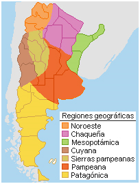

Listado de Regiones
Las regiones geográficas de Argentina son cada una de las grandes divisiones territoriales, definidas por características geográficas e histórico-sociales en las que se divide la nación sudamericana.
- Región Noroeste
- Región Chaqueña
- Región Mesopotámica
- Región de Cuyo
- Sierras Pampeanas
- Región Pampeana
- Patagonia